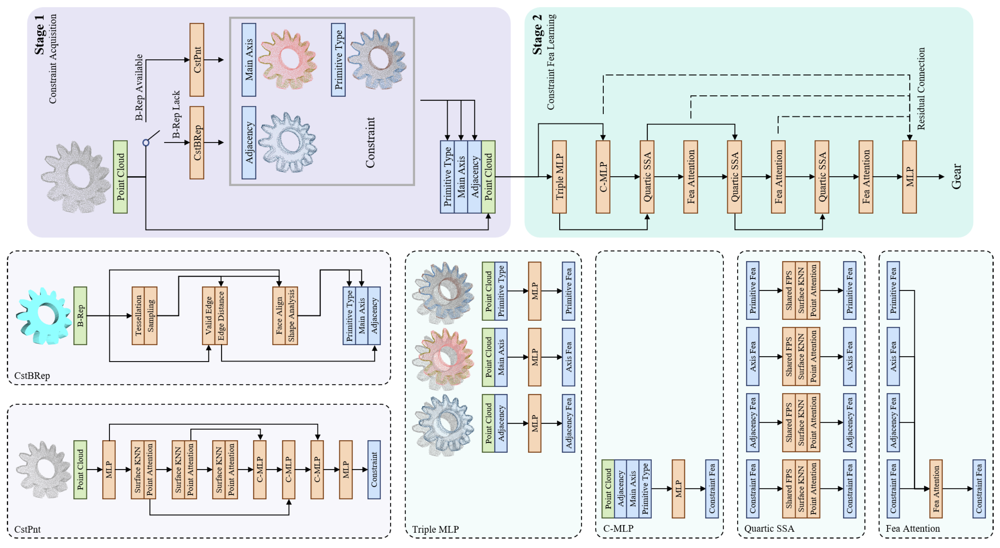

Zhichao LiaoMaster’s student
Tsinghua University |
|


Biography
I am currently a second-year Master’s student at the Institute of Data and Information, Tsinghua University, under the supervision of Prof. Long Zeng and Prof. Pingfa Feng. I obtained my Bachelor of Engineering degree from the School of Information and Control Engineering, China University of Mining and Technology.
Recently, my research interests lie in AIGC (expecially Image/Video Generation) and Multi-Modal Learning (VLMs).
I am actively pursuing PhD opportunities and welcome inquiries from those interested in collaborative academic endeavors. Please feel free to contact me for further discussion.
News
- [12/2024] No news is good news, lol !
Selected Publications | Full List
(* indicates equal contributions)
| Preprints | |

|
2DGS-Room: Seed-Guided 2D Gaussian Splatting with Geometric Constrains for High-Fidelity Indoor Scene Reconstruction Wanting Zhang, Haodong Xiang, Zhichao Liao, Xiansong Lai, Xinghui Li, Long Zeng arXiv preprint:2412.03428[paper] [code] [project page] |
|  |
Constraint-Aware Feature Learning for Parametric Point Cloud Xi Cheng, Ruiqi Lei, Di Huang, Zhichao Liao, Fengyuan Piao, Yan Chen, Pingfa Feng, Long Zeng arXiv preprint:2411.07747[paper] [code] [project page] |
| Conference | |

|
Freehand Sketch Generation from Mechanical Components Zhichao Liao, Di Huang, Heming Fang, Yue Ma, Fengyuan Piao, Xinghui Li, Long Zeng, Pingfa Feng The 32th ACM International Conference on Multimedia. (ACM MM), 2024.[paper] [code] [project page] |
Honors & Awards
-
I award myself a certificate.
Professional Services
-
Conference Reviewers:
IEEE Conference on Computer Vision and Pattern Recognition (CVPR)
-
Journal Reviewers:
Computer-Aided Design
Teaching
| 2001-2024 | All of the Years | None |
Others
Life's a Struggle, good luck!